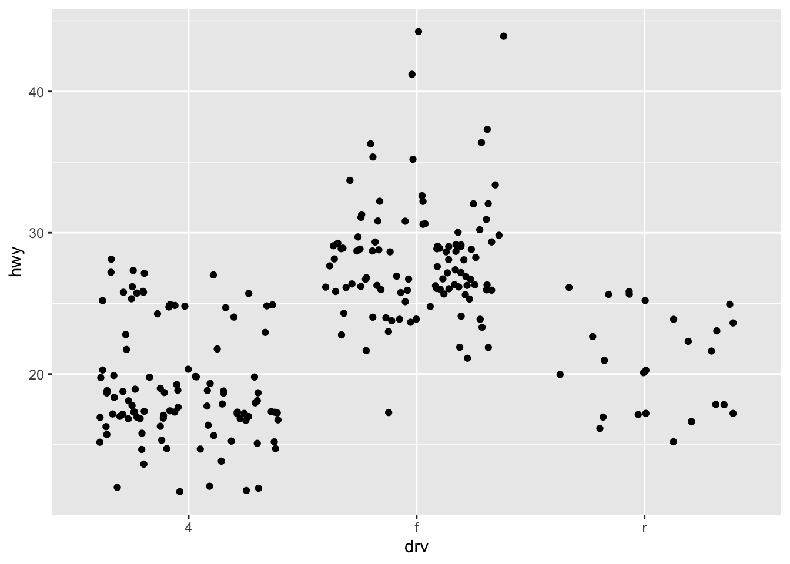
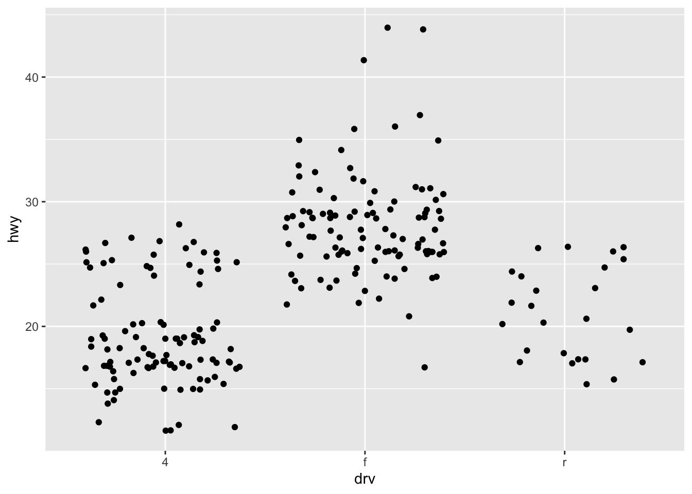

2.7 Boxplots and jittered points
When a set of data includes a categorical variable and one or more continuous variables, you will probably be interested to know how the values of the continuous variables vary with the levels of the categorical variable.
Say we’re interested in seeing how fuel economy varies within cars that have the same kind of drivetrain.
We might start with a scatterplot like this:

Because there are few unique values of both drv and hwy, there is a lot of overplotting.
Many points are plotted in the same location, and it’s difficult to see the distribution.
There are three useful techniques that help alleviate the problem:
Jittering,
geom_jitter(), adds a little random noise to the data which can help avoid overplotting.Boxplots,
geom_boxplot(), summarise the shape of the distribution with a handful of summary statistics.Violin plots,
geom_violin(), show a compact representation of the “density” of the distribution, highlighting the areas where more points are found.
Each method has its strengths and weaknesses.
Boxplots summarise the bulk of the distribution with only five numbers, while jittered plots show every point but only work with relatively small datasets.
Violin plots give the richest display, but rely on the calculation of a density estimate, which can be hard to interpret.
For jittered points, geom_jitter() offers the same control over aesthetics as geom_point(): size, colour, and shape.
For geom_boxplot() and geom_violin(), you can control the outline colour or the internal fill colour.
2.7.1 Exercises
Can you reproduce the graphics bellow?
Can you make it better, adding colors for ex?


2.7.2 Simultaneously dodge and jitter
ggplot(mpg, aes(drv, hwy)) +
geom_boxplot(outlier.shape = NA) + # Avoid overlapping jitter points with boxplot outliers
geom_jitter(width = 0.2, alpha = 0.6) # Add jitter with slight transparency and width
# Source - https://stackoverflow.com/a
# Posted by Didzis Elferts
# Retrieved 11/18/2025, License - CC BY-SA 3.0
ggplot(mtcars,aes(factor(cyl),mpg))+
geom_boxplot()+
geom_point(aes(color=factor(am)),position=position_dodge(width=0.5))